幽谷清风：岩峯诗集


诗国流连
中国是一个诗歌的国度。在中国的传统教育中，作诗是一项基本技能。进入现代，传统文化发生了很大变革，许多旧的传统经历了深刻的转型，有的甚至被废止。中国的诗歌传统算是得到良好继承的一项，尽管现代诗在西方文化的影响下，在形式和内容上有了很大的改观。
童年时，我与许多同龄的孩子一样，在父母的引导下背了一些唐诗。但那时基本上是“小和尚念经，有口无心”。背诗只是凭着记忆，谈不上有理解的成分。要说留下了什么印记，也许只是来自韵律的熏陶。
我进入学校学习不久，便受到了“学好数理化”口号的感召。在所有科目中，语文是我学得最差的一科；在所有老师中，只有语文老师对我不满意。如果得知我出了一本诗集，我的几位语文老师估计会有太阳从西方升起的感觉。
我对诗歌态度的戏剧性转变，基于两个思想转变：先是从科学主义到人文主义的转变，接着是从西方人文主义到中国人文主义的转变。前一个转变完成于中国求学时期，后一个转变完成于旅美时期。诗歌及其承载的诗性是中国人文主义的核心要素。中国的文化人大都会作诗，这不是偶然的文化现象。
我对诗歌的兴致恰好在旅美归国前夕开始萌发。这明确地展现在当时创作的《回归三部曲》中。在形式上，《回归三部曲》是诗、赋、剧三者的混合，三篇作品都包含三个小节。在语言上，三篇作品前后对称地用中英文创作，其中第二篇以双语呈现。这些规整的语言形式设计与作品的思想内容紧密契合。短短的篇幅中记录着我诸多的思想观念，包括对科学主义物质世界观，乃至西方现代性的批判性考察和对中国传统人文主义的回归。作品中的回归有多方面、多层次的意味和蕴涵。
承接对诗歌兴致的萌发，归国期间我开始深入学习诗歌创作，包括研读中外诗人的作品。我在创作技法上的尝试明确反映在《初涉诗坛》的作品中。当时成家生了孩子，家庭生活是这组作品的核心主题。
旅德时期，我进一步学习诗歌理论，研读Brooks和Warren的诗歌评论名作《理解诗歌》(Understanding Poetry)，并在理论的指导下继续诗歌创作。其间一年多的单身生活为诗歌创作提供了良好的条件。诗歌创作需要清静的心境，远离生活的琐碎，心情沉静下来，灵感才容易显现。良好的条件让我在短短时间内创作了几十首作品。与《初涉诗坛》中的作品相较，《德意志诗集》中的作品，不论在形式技法上，还是在主题深度和广度上都有了明显的提升。
来到新加坡后，在继续创作之外，我把诗歌兴趣扩展到翻译和评论领域。在西方诗人中，黑塞(Hesse)目前是我的最爱。黑塞生活在现代，却是带有浓厚传统浪漫气质的诗人，被称为“浪漫派最后的骑士”。我喜爱黑塞一方面由于他的这种传统与现代结合的思想背景，另一方面当然因为他的诗风。其形式精美、平易不晦、情感充沛、思想深邃的诗风在我这里产生了很大的共鸣。在翻译黑塞作品的过程中我努力保留精美的形式，传达丰满的情思，每一首都用了不少功夫。叶芝(Yeats)的几首名作我也非常喜欢。但叶芝是具有不同气质的诗人。由于受到爱尔兰神秘主义的影响，他的大部分诗作很晦涩，风格上更加现代。
最后，在《艺风对韵》一组作品中，我把艺儿小学期间写的几首诗翻译成英文。童心与诗心紧密相连，诗人都是童心不泯的人。鉴赏这几首诗作，在稚嫩之中我们可以感受到几分纯真的深邃。可惜她进入中学之后，繁忙的课业和课外活动使得诗心暂时泯灭。希望将来有复燃的机会。
这本小小的诗集，记录着我二十年的诗国历程，同时也是我四国生活和遐思的见证。
结束前略谈一下我的诗路。
现代中国人作诗大都沿着传统和现代两条路线。唐诗宋词是中国诗歌史的顶峰，现代仍有不少人坚持唐诗宋词的创作方法，就像明清时期文人们所做的那样。当然，更多的现代诗人写现代诗。从这本诗集中的作品读者可以看出，我的诗作既没有沿着传统的路线，也没有沿着现代的路线。
中国的现代诗是在非常特殊的历史文化环境中创生的。在全盘否定传统的思想框架中，创新失去了坚实的根基，在很大程度上变成了对西方的模仿。因此出现了中国传统与现代诗歌的断层。在我看来，胡适《尝试集》中的诗作明显不如其传统诗作。
由于我本人步入诗坛时的特殊思想背景，我对现代诗没能产生多少好感。几本现代诗集从头到尾读下来，没几首能找到感觉。徐志摩和余光中是两个明显的例外，因为他们都有保持传统的努力。现代诗给我的总体印象是很容易走向轻率和造作两个极端，形式上是这样，内容上也是这样。形式上，有人统统抛弃一切音韵格律，随意用词排句，又有人为了形式而形式，空洞地标新立异；内容上，有人统统抛弃一切价值规范，彰显荒诞、颂扬颓废，又有人故弄玄虚，用玄奥晦涩表现深邃。
另一方面，我也不愿沿用唐宋的传统。明清文人这么做，情有可原。现在我们已经进入现代，我们的生活环境，汉语的发音体系较一千年前都有了很大改观。再死守传统，即便是顶峰，也已不符时代的要求。在新的时代，我们不只是要继承传统，更要把中国诗歌推上新的高峰。
其实，从唐诗到宋词的演进为我们今天延续诗歌传统提供了很好的参照。唐代的律诗精美绝伦。但它也有两个问题：一是严格的格律给诗歌创作带来很大限制，二是由于格律单一，诗作难免千篇一律之嫌。宋词在很大程度上解决了这两个问题，词律的宽松和多样的词牌使得词作丰富多彩。宋词发展唐诗的关键在于，在传统元素的基础上创造新的格律，而不是全盘抛弃格律传统。而今天我们不仅可以沿用中国传统的格律元素，同时可以融合西方的格律元素。
细心的读者可以看出，我的诗歌路线正是我关于传统和现代基本立场的直接反映。我对《理解诗歌》的理解和对诗路的探索，在《诗艺》中有明确的解说。更深入的诗论留给下一本著作。
诗作节选
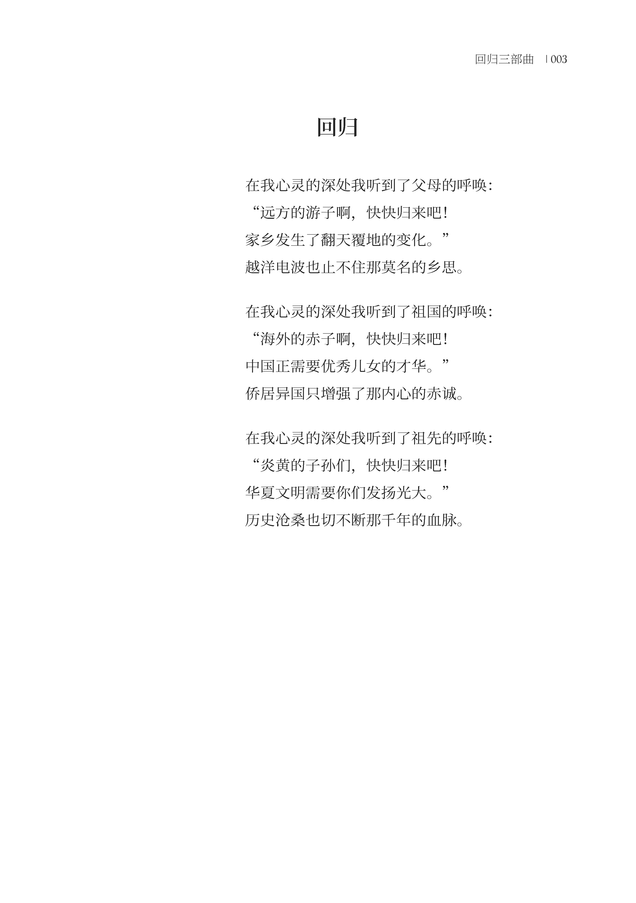
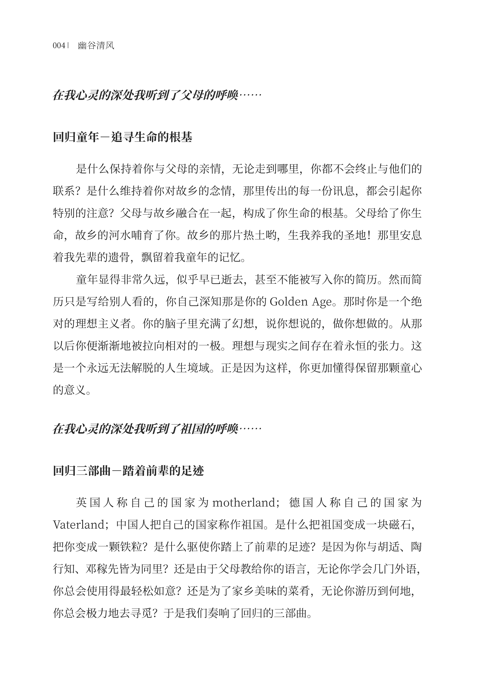
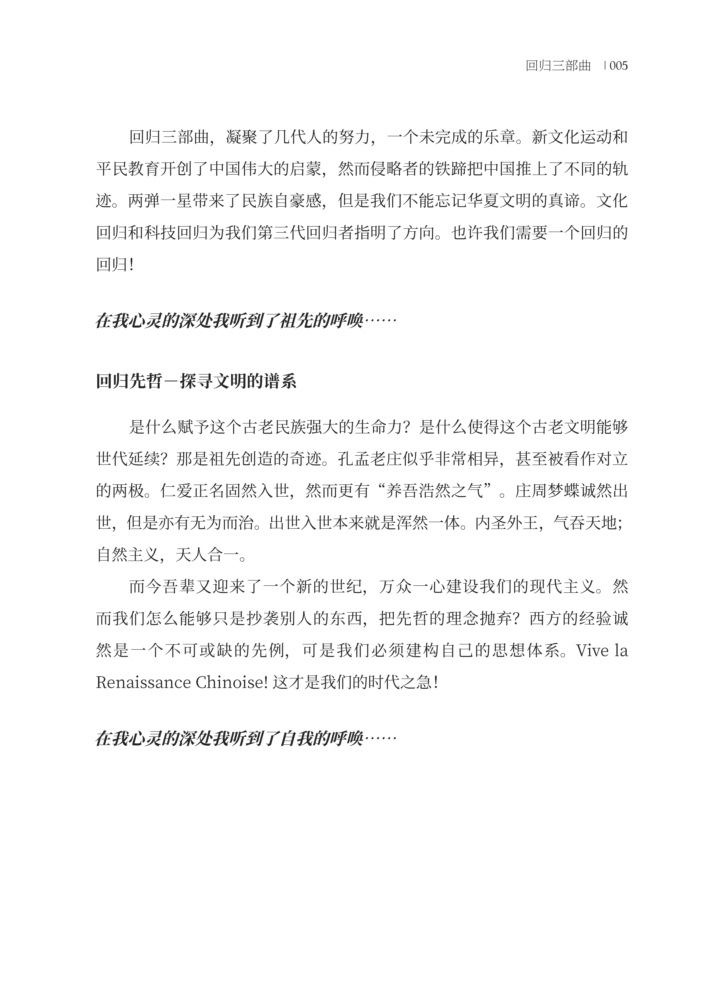
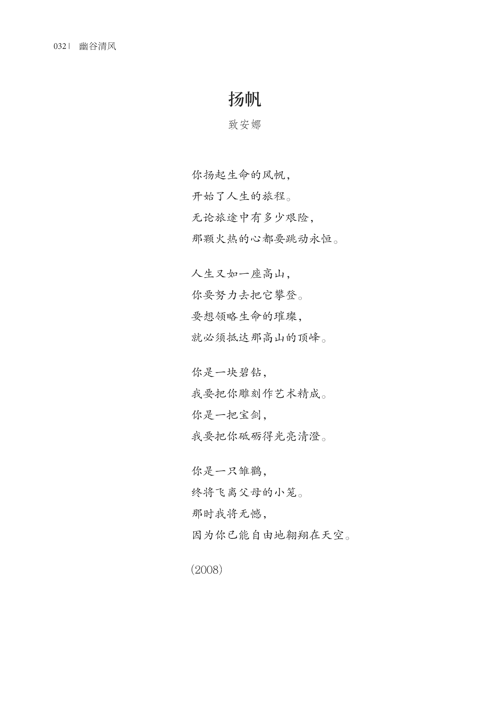
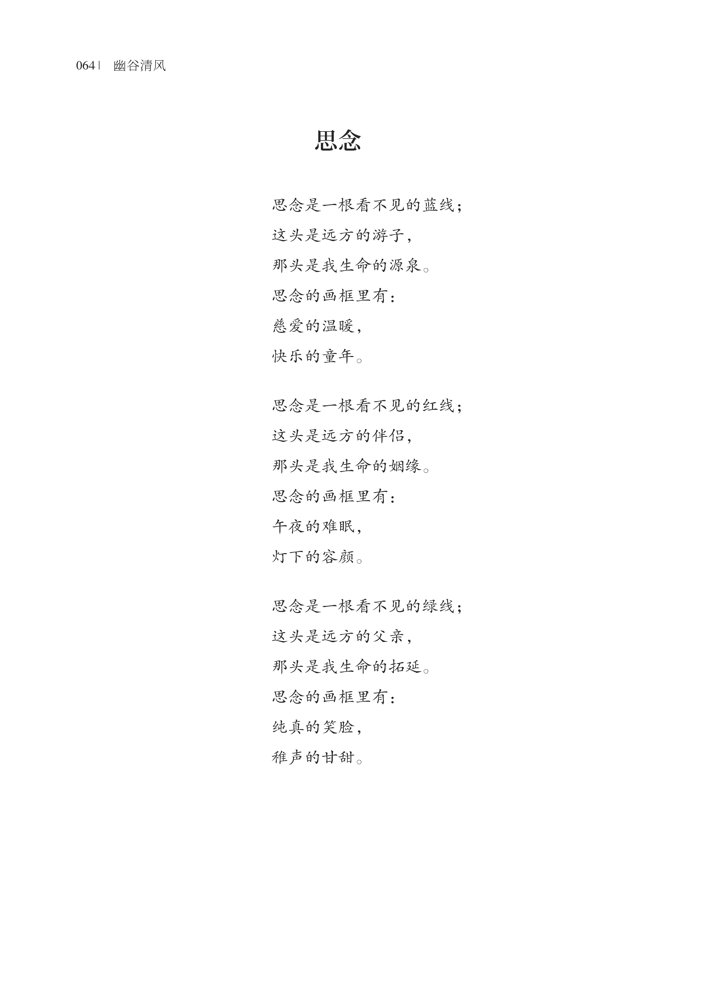
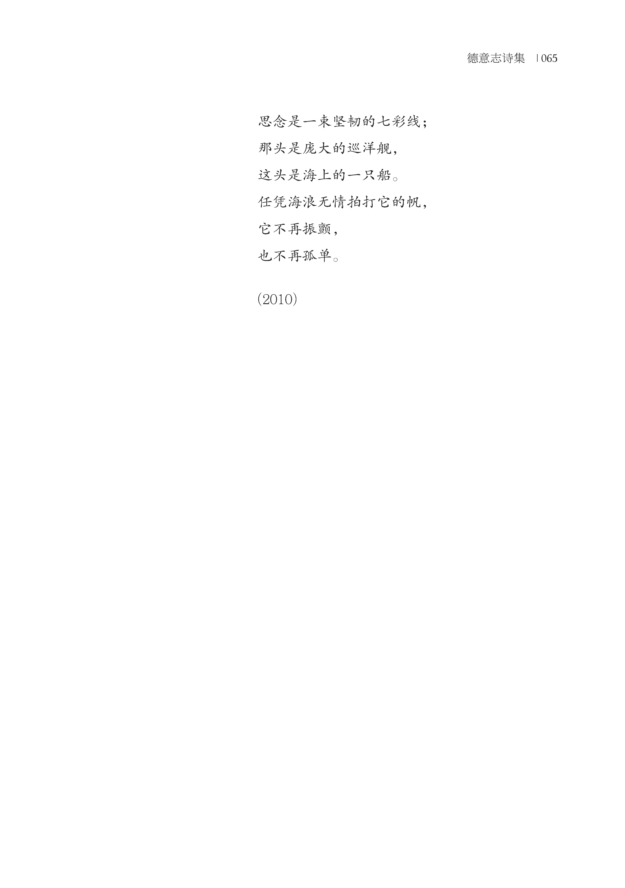
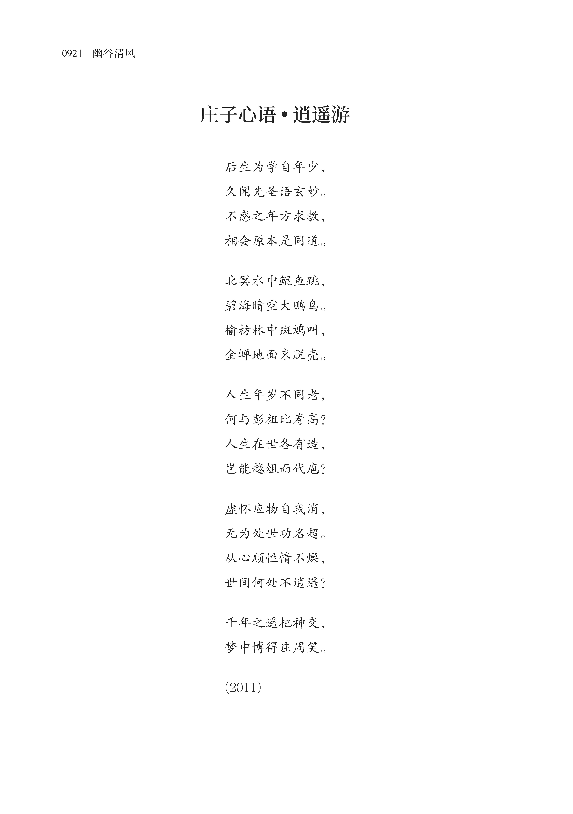
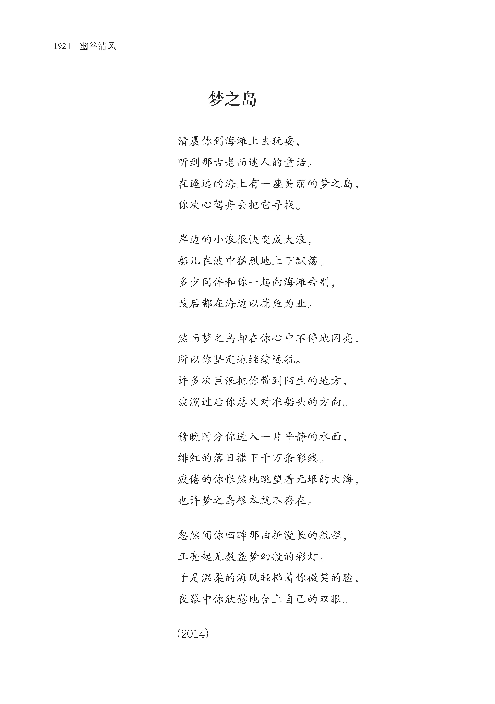
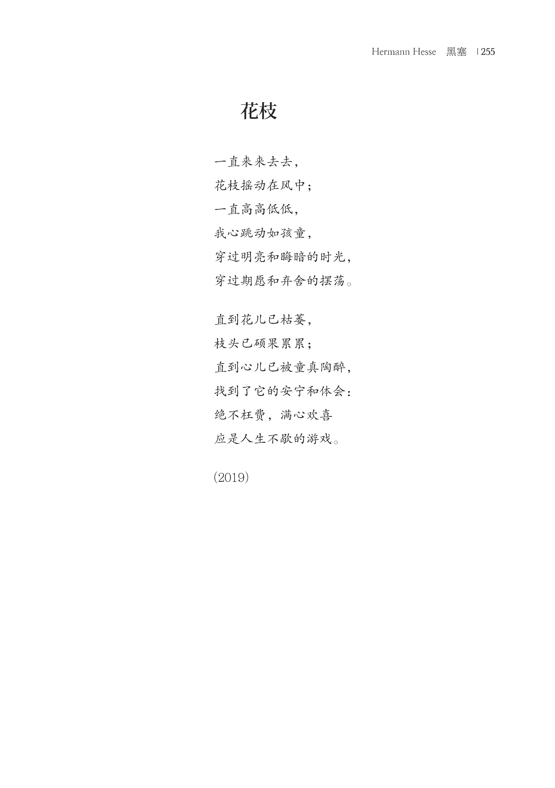
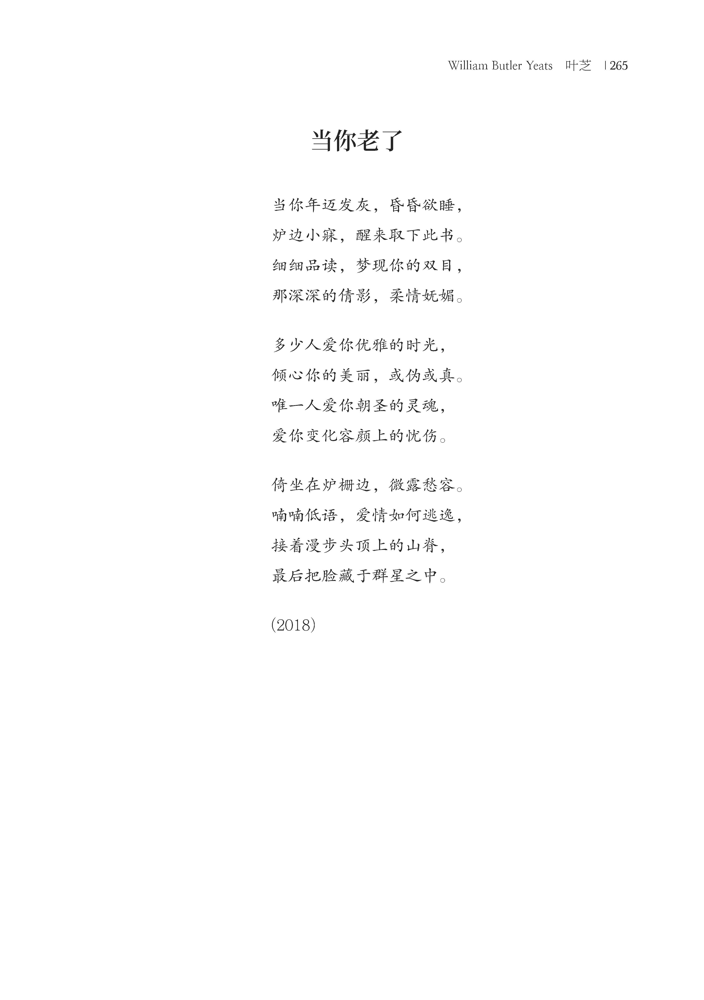
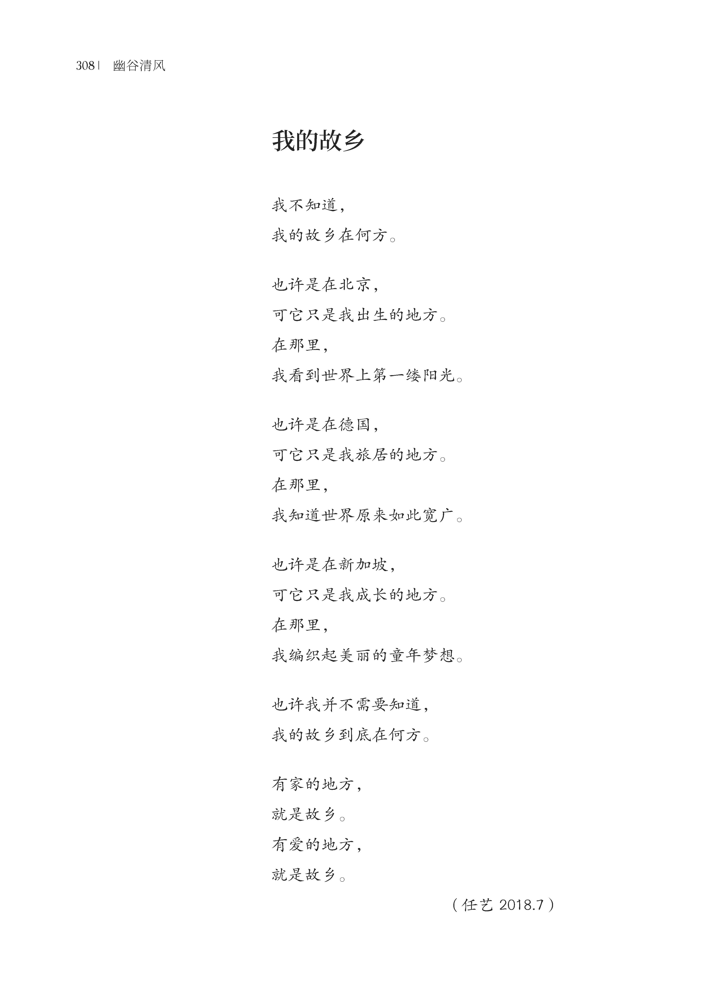
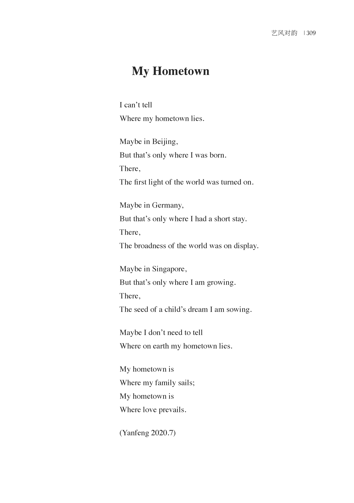
作者自评
封面解说
封面摄影作品由我本人摄于黄山西海大峡谷。
在德国潜心研读了《庄子》和李约瑟的《中国科学技术史》之后，我对道家有了更深入的体悟和认同。黄山上目前佛教寺院主导的局面，是在明清时期才形成的。黄山早先是道士炼丹的地方，唐宋时期道教宫观在山上十分兴盛。从物理环境来看，黄山的松、石、云、泉展示的是道家的人间仙境。
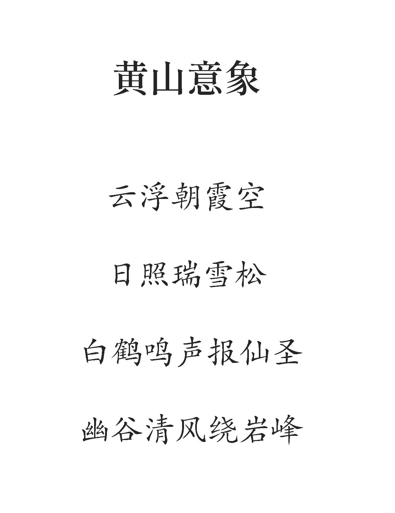
“幽谷清风”的标题即采自黄山的意象。当然，这与我的名字也有明显的关联。黄山意象描绘在诗集的题诗中。这首题诗明确展示着我对中国诗歌传统的态度，以及我对传统诗歌中的节律、对仗、押韵等要素所做的具体取舍和创造演绎。其中突出的是句式对仗的五言联和七言联之间的静动对应和七言联中的五联韵（后五个字对应押韵）。
“岩峯”的笔名同样有说法。最明显的是，“岩峯”谐音我的实名。但为什么不是“岩峰”？主要用意就在这里。“岩”字是简化字，简得有意思。这属于会意简化法，岩的确就是山中的石块，而且“岩”比繁体的“巖”要简便多了。“峯”字是“峰”字的古体。汉字是象形文字，“峯”字显然更贴合山峰。“峰”字的产生出于书写习惯，由此“峰”成为“峯”的俗体字。在长期频繁交替使用之后，“峯”与“峰”变成异体字。在汉字简化的过程中，“峰”被选中，“峯”被淘汰。
结果，“岩峯”的名字中，前一字为简化字，后一字为古体字。在古今中择其优者，然后进行整合，正是这个笔名的用意。
封面上，在黄山美景之外是明月当空的意象。明月当空增强了幽谷清风的意境。最后，英文的标题表明诗集多语的特性。
诗集特性
与汇集诗作的通常诗集相比，这本诗集有一些特别的属性。
- 文体多样：在诗作的主体之外，诗集中还包含赋和剧。
- 主题多样：诗作的主题从浅显的童谣和叙事诗，经由丰满的绘景抒情诗，直到抽象的哲理诗。
- 形式多样：诗集中的诗作采用了多种形式，从简短的小品诗到多章组诗。诗行长短不一，诗节行数多变。篇篇皆有律，篇篇律不一。
- 作者自评：伴随着每篇诗作的是作者本人的评论。评论或介绍创作背景，或对诗行加以解说，或对诗作主题进行拓展。
- 多种语言：诗歌原作使用三种语言：汉语、英语和德语；诗歌译作涉及三个方向：德语➡汉语、英语➡汉语、汉语➡英语。
- 图文并茂：作者本人的影作穿插于诗作之间，对诗作起到烘托作用。
- 家庭创作：在我本人的诗作影作之外，诗集中还包含艺儿的诗作、影作和画作。诗集由迎辉担任编辑，由我们自家制作出版发行。
一本诗集，两个转变，四国生活和二十年的心路历程
从教育多样性的角度来看，我们没有现在的孩子幸运。我们小时候受到的艺术教育几乎是零。而现在的孩子，很小就有机会接触多个艺术领域。
我目前有严肃兴趣的两个艺术领域，摄影和诗歌，都是在人生很晚的阶段才介入的。介入这两个领域正好对应于我思想的两个转变。进入北大读研，伴随着从科技专业转入哲学专业，我很快实现了从科学主义到人文主义的转变。此后，我便有了艺术的需求。选择摄影对于有理工科背景的人是一个很自然的事情。到了美国，我又进一步从西方的人文主义转变到中国的人文主义。这个转变让我介入诗歌领域。这也是很自然的事情。中华文化本来就是诗性的文化，我从哲学回归中华文化，自然会选择诗歌。
诗集中记录着我在四个国家的生活体验，其中的不同部分对应着这四个国家。具体来说，《回归三部曲》完成于旅美归国前夕，是对我旅美期间思想的总结；“初涉诗坛”部分对应于归国的四年；《德意志诗集》与旅德时期相对应；诗集中其余的部分，包括“感触狮城”部分、对黑塞和叶芝诗作的翻译，以及对艺儿诗作的应答与翻译，都发生在新加坡。
诗歌作为文学作品，与哲学思辨不同，它必须贴近具体的生活体验。所以，在这些诗作中，读者可以透视我在四个国家的鲜活经历。
当然，有哲学背景的人作诗，也不会只停留在叙事、绘景和抒情的层面。这个诗集中的诗作同时也记录着我在经历了两次重大思想转变之后，二十年间的心路历程。在两次思想转变的基础上，我的思想逐步地变得丰富、深入和完善。从《登山者》对机械化和数学化的西方现代文化的批判，到《梦游希腊》对整个西方文明的批判性考察和《木的自白》对传统、现代和未来的反思；从《回归》中提出回归先哲，到《庄子心语》对庄子思想的系统阐释，再到《华夏魂》对华夏文明精神特质的刻画；这些都映现着我的思想在二十年间的发展过程。
回归三部曲
《回归三部曲》是我早期的独立作品，在这本诗集中基本保持原样，没有外加评论。这里略作解说，以便读者更好理解。
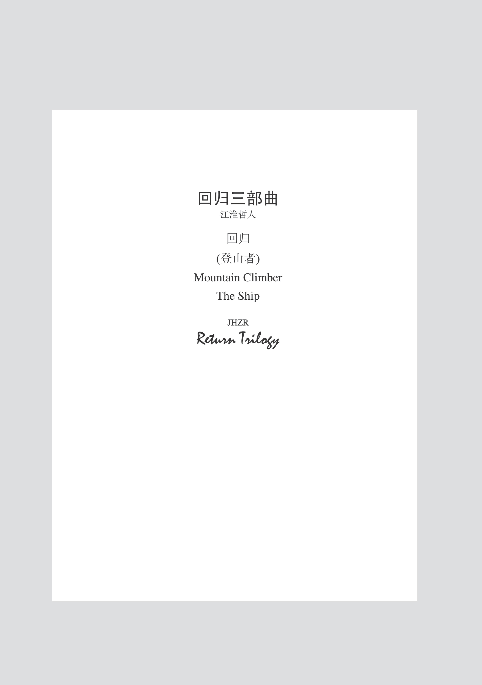
这是一部内容和形式都很特别的作品，回归是其核心的主题，而三这个数字遍布作品之中。这不禁让人联想到黑格尔的逻辑学。然而，我在作品中运用的逻辑与黑格尔的逻辑大相径庭。
《回归》《登山者》和The Ship关涉的是三种基础性的回归。《回归》关涉的是现实的回归；《登山者》关涉的是个人向着精神家园的回归；The Ship关涉的是人类向着本真生存境遇的回归。
《回归》中又包括三种现实的回归：回归童年、回归祖国和回归先哲。回归童年，找回童心是个人向自我的现实回归；回归祖国是个人向原生社会的回归；回归先哲，归本溯源是民族向文化本原的回归。回归祖国进一步包括三个阶段：胡适和陶行知代表文化回归的第一个阶段。这一阶段的基本特征是引进西方现代文化。邓稼先代表科技回归的第二个阶段。这一阶段的基本特征是引进西方现代科技。钱学森显然也属于这个阶段。目前的大批回归者仍属于这个阶段，只不过他们出国的背景与前辈不同。回归的第三个阶段目前最多只是微露端倪，还没有真正开始。这第三阶段的回归又应是文化回归，但其根本任务与第一阶段的文化回归很不同。它不是要引进西方现代文化，而是要复兴中国传统文化，但要在一个比新儒家更宽广的视野中进行。从文化回归到科技回归，再回到文化回归，这是另一个层面上的回归。所以说是“回归的回归”。
第三个阶段的文化回归与回归先哲显然是密切相关的，也是我正为之努力的。
《登山者》中谈到了回归个人精神家园的三个阶段：远离都市、超越孤独和体验愉悦。这个主题思想后来在《独自面对上苍》中得到重新演绎。放在中华文化的框架中，这实际上就是经由精神修炼通内圣的过程。
The Ship是三篇中最难理解的。究其原因，这一篇涉及深入的哲学问题。如果不通晓西方哲学，问题本身就难以理解。另一方面，我在剧作中运用了多种隐喻。这对有哲学背景的人都构成挑战。这里我给出一些提示，帮助大家理解。但我不想把所有东西都说得太白。否则，剧作的韵味都给破坏了。
这篇剧作关涉哲学中最基本的世界观念和人生观念，涉及哲学的多个领域，包括本体论、认识论、科学哲学、心灵哲学等。其中展示着我的一些基本哲学观念，对科学主义物质世界观的批判是一个明确的线索。The Ship就是人类的世界和生存境遇的基本隐喻。这艘船漂浮在水上，没有可以抛锚的海港。任何外在的可以固着的地方，都是人类自身的幻想。位于大海的中央，遇到狂风巨浪，人类能做的只是挥动手中的船桨，把握自己的方向。
剧作由简短的三幕组成。第一幕中的对话是现代西方哲学中一个著名对话的续集。古希腊的柏拉图写了许多对话，但是在现代西方哲学中对话并不多。我有意用对话者名字的首字母把对话者隐藏起来。在上面的提示之后，读者能否猜出Mr. P和Mr. H是谁？第二幕是Mr. S的独白。读者应该很容易猜到Mr. S和Mr. T分别代表什么。我在独白中用了一些隐喻，但其内容大家应不难理解。第三幕包含师徒五人的对话。四个徒弟分别代表四种不同的观点立场，由agree, biased, curious和disappointed四个斜体词标示。
在形式上，除了每篇由三个部分构成之外，三篇还以中英文对称的方式呈现。这要求《登山者》以中英双语对称编排。对称本身就是一种优美的形式属性，它同时也标示中西文化此时在我心中已经处于对等的地位。相较旅美初期“崇西贬中”的心态，这是一个重要的思想演进。